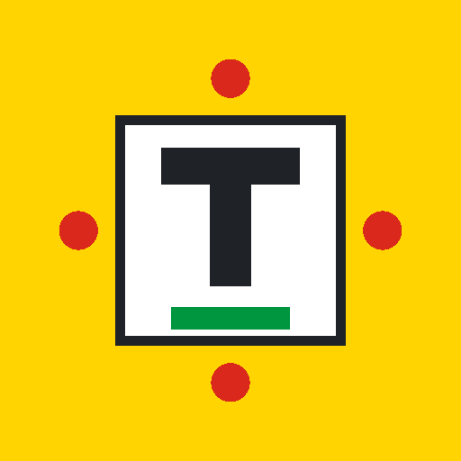

Étape du jour
14 · km 0
Avoir le cul bordé de nouilles
Ongelooflijk veel geluk hebben.
Pépite
Geluk
1998
Caravane
Productie-ontwerptaal in Tour de France-livrei voor Tom Polaks taalarchief (NL ⇄ FR). Plat, geel, energiek. Alle componenten hieronder volgen het class-contract uit styles.css.
De gele kop met rugnummerplaatje, wordmark en subtitel — gevolgd door de zoekbalk.
Tom Polaks taalarchief · NL ⇄ FR
Filters als maillots: geel (alles / leider), bolletjes (pépites), groen (onderwerpen), wit (afkortingen). Actieve staat = .is-active.
De uitgelichte ingang van de dag, met gele etappe-kop en km-markering.
Avoir le cul bordé de nouilles
Ongelooflijk veel geluk hebben.
Avoir le cul bordé de nouilles
Ongelooflijk veel geluk hebben.
Standaard resultaatkaart: Frans (de uitdrukking) boven, Nederlands eronder, badges, en optioneel het ruwe origineel.
Poser un lapin à quelqu'un
Iemand laten zitten; niet komen opdagen voor een afspraak.
Les doigts dans le nez
Met het grootste gemak; fluitend.
RAS — rien à signaler
Niets te melden; alles in orde.
Vijf varianten: bron, jaar, onderwerp, pépite, afkorting.
Meest opgezochte uitdrukkingen. De leider draagt het geel (--leader).
Horizontale route met km-markeringen; het actieve jaar draagt het geel.
Onderste navigatie; actieve tab draagt de gele indicator (.is-active).
PWA-icoon, maskable (192/512), apple-touch (180) en favicon — voor "op beginscherm zetten".
